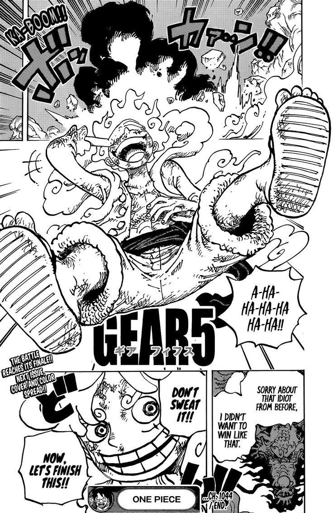
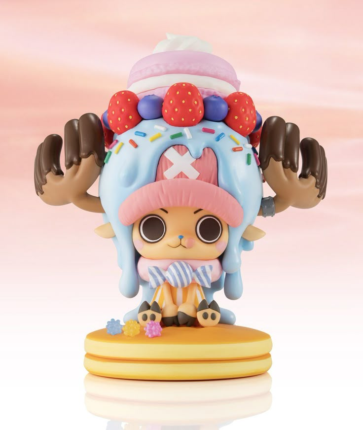
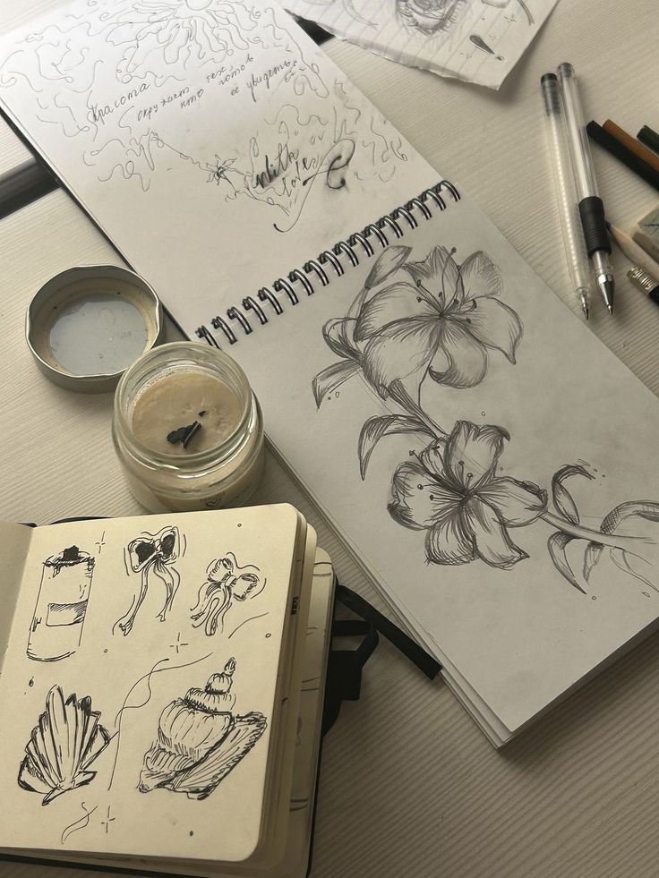

I am passionate about building structured ideas, exploring long-term possibilities, and continuously improving myself and the systems around me.
I am a thoughtful and growth-oriented individual who values clarity, purpose, and meaningful progress.
I enjoy exploring ideas deeply and constantly challenging myself to become better — not only in skills, but also in mindset and perspective.
I value depth over noise. I prefer meaningful conversations, focused work, and independent thinking. Solitude helps me recharge and refine my ideas before sharing them with the world.
I naturally think about long-term direction and hidden patterns. Instead of focusing only on what is visible, I enjoy exploring possibilities, strategies, and future potential..
I rely on logic and objective reasoning when making decisions. I value fairness, structure, and clear evaluation rather than emotional impulse.
I feel most comfortable when plans are clear and goals are defined. I prefer organized systems and proactive execution over last-minute improvisation.

I enjoy reading manga and exploring Japanese culture, appreciating its storytelling depth and unique perspectives.

I collect character figures from movies and stories, inspired by the creativity and personality behind each design.

I find peace in observing landscapes and expressing ideas through sketching and simple illustrations.
I love discovering new places and experiences, constantly expanding my perspective through exploration
Email: uyentran25052006@gmail.com
Phone: 0886 239 028
LinkedIn: https://www.linkedin.com/in/uyentp?utm_source=share&utm_campaign=share_via&utm_content=profile&utm_medium=ios_app
Facebook: https://www.facebook.com/phuong.uyen.550855